ChatGPT на Android
Два способа поставить ChatGPT.
Способ 1 — через RuStore. Проще и быстрее.
Не вышло — способ 2, через APKMirror.
Ссылки прямо на нужных шагах.
Никакой отдельной свалки ссылок в конце.
Всё, погнали, блядь!
СПОСОБ 1. Через RuStore
ШАГ 1. Ставим ChatGPT из RuStore
Открой ссылку:
CHATGPT В RUSTOREНажми «Установить».
Если RuStore на телефоне нет — сначала поставь его, потом вернись по ссылке.
Проверяй разработчика: OpenAI.
Дождись завершения.
Не сработало? Читай ниже — способ 2.
Страница не грузится, нет кнопки «Установить» или Android ниже 12 — не мучайся, сразу на способ 2.
ШАГ 2. Запускаем ChatGPT
Открой ChatGPT.
Войди или зарегистрируйся любым удобным способом.
Для входа используй VPN.
Пока осваиваем бесплатную версию.
Оплата Plus — во вкладке «Оплата».
Всё работает? Способ 2 тебе не нужен — листай в самый низ.
СПОСОБ 2. Через APKMirror
ШАГ 1. Ставим APKMirror Installer
Открой ссылку:
СКАЧАТЬ УСТАНОВЩИКНажми «Установить».
Дождись завершения.
Это программа для установки файлов .apkm.
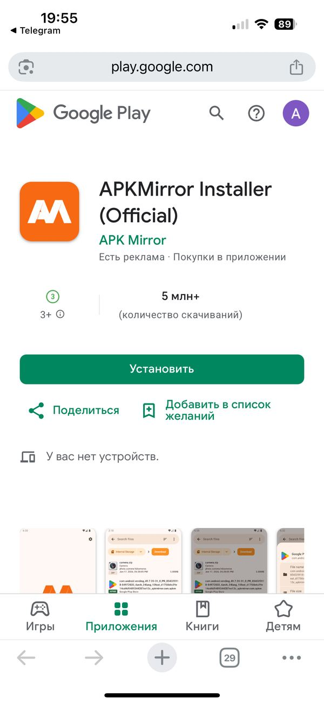
ШАГ 2. Скачиваем ChatGPT
Открой страницу:
СКАЧАТЬ CHATGPTЕсли открылось описание — пролистай вниз до блока «All versions».
Нажми на самую верхнюю версию в этом списке.
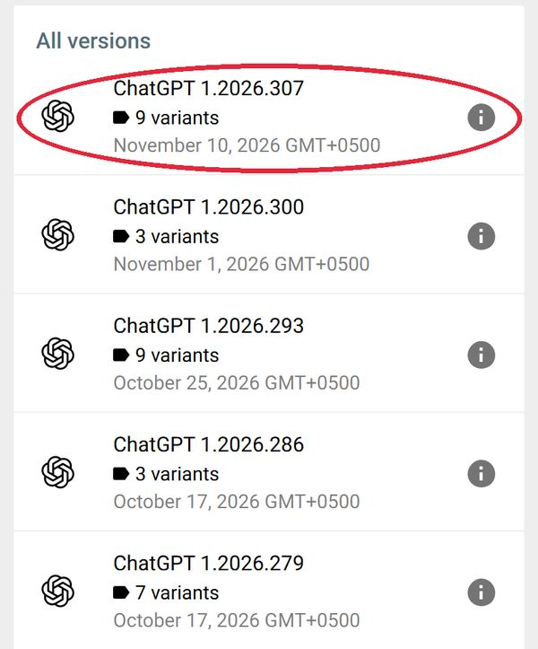
Откроется страница версии. Сверху реклама — листай вниз.
Или сразу нажми вкладку DOWNLOAD.
Найдёшь таблицу «Download ChatGPT».
Смотри колонку Arch и выбирай строку под свой Android:
• Android 13 и новее — universal
• Android 10–12 — arm64-v8a
• Android 7–9 — arm64-v8a + armeabi-v7a
Не знаешь свой Android? Настройки → О телефоне → Версия Android.
Если подходящих строк несколько — бери любую.
В нужной строке нажми на номер версии слева.
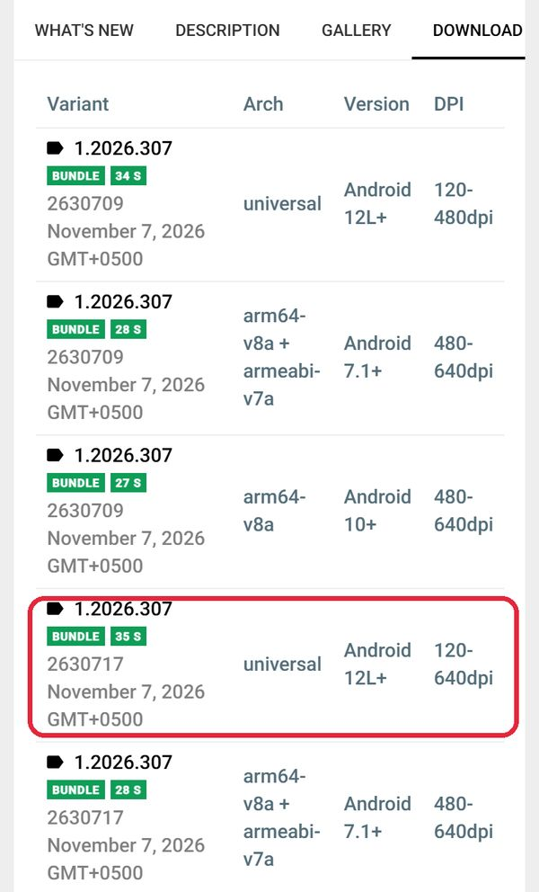
Откроется ещё одна страница. Листай вниз до чёрной кнопки.
Нажми Download APK Bundle и скачай .apkm.
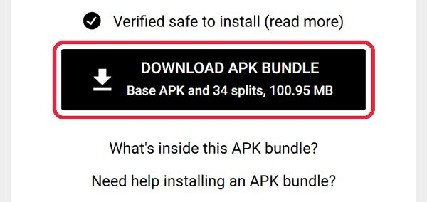
Если сайт попросит подтвердить, что ты человек, — поставь галочку.
Проверяй разработчика: OpenAI.
ШАГ 3. Находим скачанный файл
Быстрый путь: когда файл скачается, нажми на него прямо в браузере или в уведомлении.
Телефон предложит открыть его через APKMirror Installer — соглашайся.
Дальше сразу переходи к шагу 4.
Не вышло? Тогда так:
Открой APKMirror Installer.
Выбери «Browse files» или «Обзор файлов».
Если телефон спросит доступ к файлам или хранилищу — разреши.
Открой папку «Загрузки» (Download).
Найди файл ChatGPT с расширением .apkm.
Нажми на этот файл.
ШАГ 4. Устанавливаем приложение
Нажми «Install» / «Установить».
Если Android запросит разрешение, разреши установку из APKMirror Installer.
Нажми «Настройки» в этом окне.
Откроется экран «Установка неизвестных приложений».
Включи переключатель «Разрешить из этого источника».
На Samsung, Xiaomi и других название может немного отличаться — ищи похожее.
Вернись назад и подтверди установку.
Дождись завершения.
Значок ChatGPT появится среди приложений.
Окно с разрешением не появилось, а установка не идёт? Открой Настройки → Приложения → APKMirror Installer → «Установка неизвестных приложений» и включи переключатель там.
ШАГ 5. Запускаем ChatGPT
Открой ChatGPT.
Войди или зарегистрируйся любым удобным способом.
Для входа используй VPN.
Пока осваиваем бесплатную версию.
Оплата Plus — во вкладке «Оплата».
ГОТОВО!
Telegram: @sanchebas_aiApp Store → США → ChatGPT
Оплата Plus — во вкладке «Оплата».
ПЕРЕД НАЧАЛОМ
Потрать баланс Аккаунта Apple до нуля.
Отмени все подписки в App Store.
Иначе Apple не даст сменить страну.
ШАГ 1. Открываем App Store
Открой App Store.
Нажми на значок профиля справа вверху.
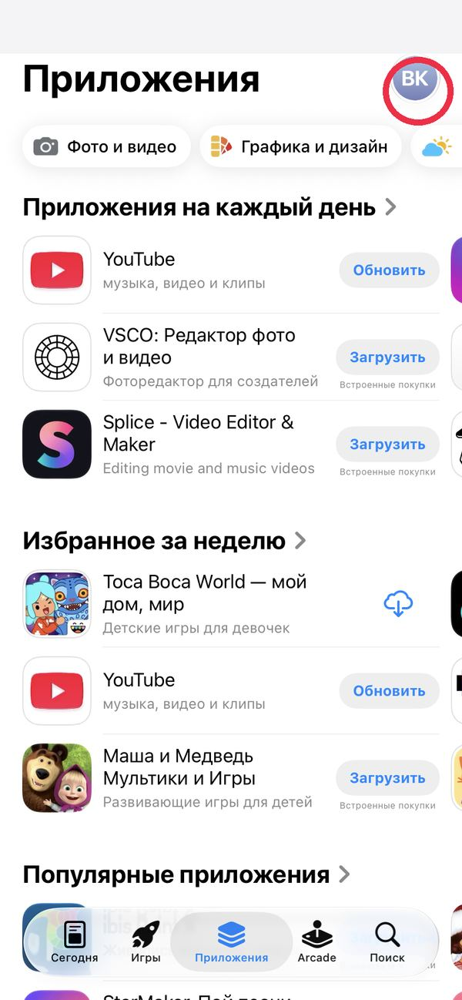
ШАГ 2. Нажимаем на аккаунт
Нажми на карточку с именем и фамилией в середине экрана.
Откроются настройки учётной записи.
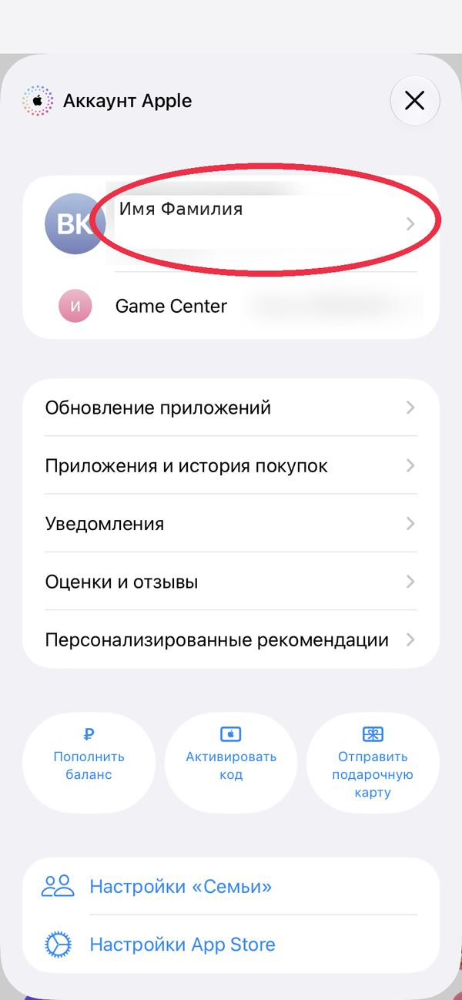
ШАГ 3. Настройки аккаунта
Открой настройки учётной записи.
Найди строку «Страна/регион» и нажми на неё.
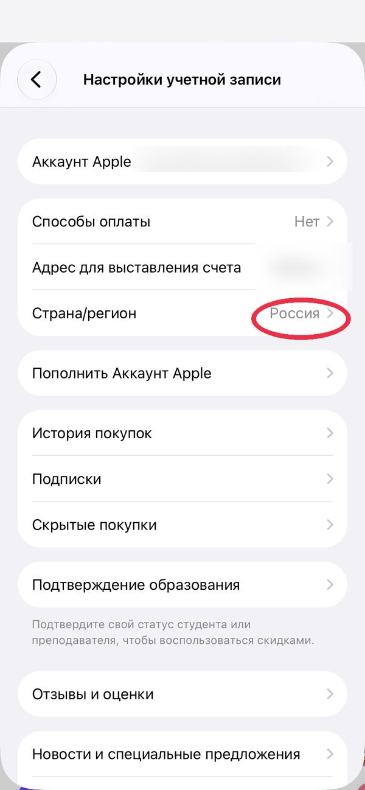
ШАГ 4. Выбираем США
Найди и нажми «Соединённые Штаты».
Подтверди изменение страны.
Откроются условия — нажми «Принимаю».
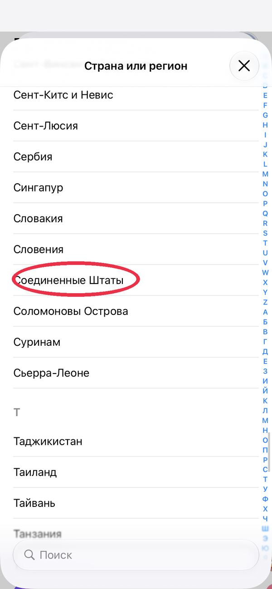
ШАГ 5. Заполняем поля
Способ оплаты: «Нет».
Адрес: 768 5th Avenue
Город: New York
Штат: New York
Индекс: 10019
Телефон: (212) + 7 цифр
Впиши любые 7 цифр.
Адрес, город, штат и индекс указаны условно. Их никто не проверяет. Можете вписать данные, которые я вам дал.
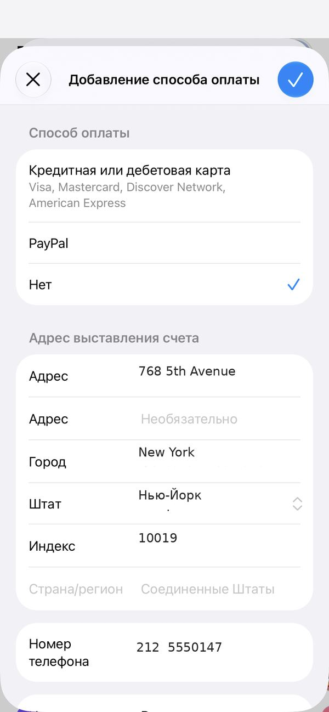
ШАГ 6. Подтверждаем
Нажми синюю галочку (ОК) вверху экрана.
Проверь в настройках, что страна теперь США.
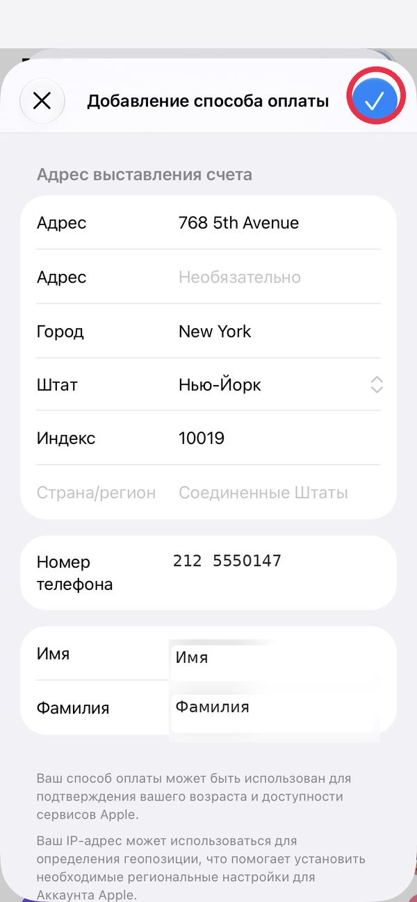
ШАГ 7. Скачиваем ChatGPT
Зайди в App Store.
Найди ChatGPT.
Разработчик: OpenAI OpCo, LLC.
Нажми «Загрузить».
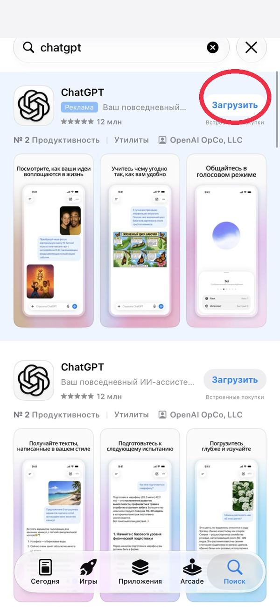
ШАГ 8. Запускаем ChatGPT
Открой ChatGPT и зарегистрируйся любым удобным способом.
Для входа понадобится VPN.
Пока осваиваем бесплатную версию.
Оплата Plus — во вкладке «Оплата».
Можно вернуть российский регион App Store обратно.
ГОТОВО!
Telegram: @sanchebas_aiПодключаем платный тариф нашему Валере.
Два способа: своя карта ZARUB или сервис Kupikod.
Способ 1 — карта для любых оплат и подписок.
Способ 2 — подписка по ID, без выпуска карты.
Ссылки прямо на нужных шагах.
Всё, погнали, блядь!
СПОСОБ 1. Картой ZARUB
ШАГ 1. Узнаём сумму в ChatGPT
Открой страницу с тарифами:
ОТКРЫТЬ ТАРИФЫ CHATGPTЕсли попросит, войди в аккаунт.
Для входа используй VPN.
Выбери тариф: Go, Plus или Pro.
Нажми кнопку покупки у выбранного тарифа.
Дойди до формы оплаты. Запиши сумму и валюту.
Пока не плати.
Тарифы ChatGPT, $ в месяц:
Go — $8.
Plus — $20.
Pro — $100, $200 или $500. Чем дороже, тем выше лимиты.
Проверено 17 ноября 2026 года.
В форме не доллары?
Можно пополнить с запасом. Лишнее останется на карте и уйдёт на следующую оплату.
А можно спросить в поддержке ZARUB: сколько долларов нужно на карте с учётом конвертации и комиссии.
Сумму и валюту возьми из формы.
ШАГ 2. Открываем бота ZARUB
Открой ссылку:
ОТКРЫТЬ БОТА ZARUBРеферальная ссылка.
Нажми «Запустить».
Откроется приложение ZARUB.
На главном экране два баланса: «Баланс» и «Баланс карт».
Сначала пополни баланс. Карту выпустим после.
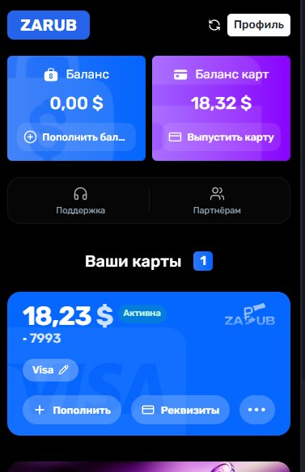
ШАГ 3. Пополняем баланс ZARUB
Нажми «Пополнить баланс».
Выбери СБП.
Введи сумму в рублях. Минимум 100 ₽, максимум 200 000 ₽.
Сумма должна покрыть выпуск карты, подписку и комиссии.
Нажми «Далее».
Внизу увидишь «К зачислению», «Курс», «Комиссию» и «Итого к оплате».
Проверь их перед оплатой.
Оплати через своё банковское приложение.
Дождись зачисления на баланс ZARUB.
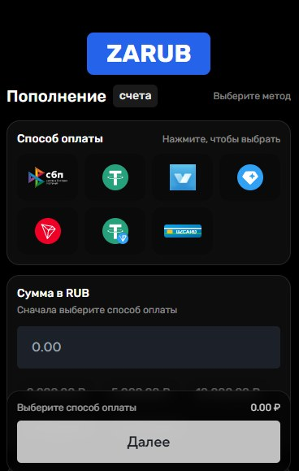
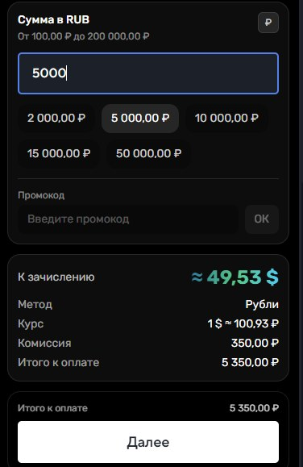
За что платим:
Выпуск виртуальной Visa — $19. Обслуживание — $0 в месяц.
Плюс сумма подписки из шага 1.
Плюс комиссии: СБП — 7%, минимум 1 ₽. Перевод на карту — 1,5%. Оплата картой — $0,35.
Калькулятор ZARUB считает выпуск и пополнение. Комиссию $0,35 за платёж учти отдельно.
После успешного выпуска карты стоимость выпуска не возвращают.
Тарифы проверены 16 ноября 2026 года.
ШАГ 4. Выпускаем и пополняем карту
Когда баланс пополнен, вернись на главный экран.
Нажми «Выпустить карту».
Выбери VISA за $19. Она поддерживает 3DS.
Оплати выпуск с баланса ZARUB.
Дождись карты в блоке «Ваши карты».
Нажми «Пополнить» и переведи на карту сумму для подписки.
Проверь, что деньги на карте, а не только на балансе ZARUB.
Нажми «Реквизиты».
Если в форме ChatGPT доллары, положи на карту итоговую сумму плюс $0,35 за платёж.
Если валюта другая, используй сумму, которую уточнил в шаге 1.
ШАГ 5. Вводим карту ZARUB
Вернись на страницу оплаты ChatGPT.
Выбери оплату картой.
Введи номер карты, срок и CVV из реквизитов ZARUB.
Заполни имя и платёжный адрес по данным для твоей карты.
Проверь тариф, сумму и период подписки.
Не знаешь, какой адрес или индекс указать? Не выдумывай.
Спроси поддержку ZARUB до оплаты.
Не отправляй никому пароль от ChatGPT, CVV и коды подтверждения.
ШАГ 6. Подтверждаем оплату
Нажми кнопку оплаты.
Если появится поле для одноразового кода, открой бота ZARUB в Telegram.
Скопируй OTP-код из сообщения бота.
Вставь его в поле на странице оплаты.
Если следом запросит 3DS-пароль, возьми его из реквизитов карты ZARUB.
Введи пароль и подтверди платёж.
Дождись результата на странице ChatGPT.
ШАГ 7. Проверяем тариф
Вернись в ChatGPT.
Обнови страницу.
Открой настройки аккаунта.
Проверь, что включился выбранный тариф.
Тариф не появился?
Открой карту в ZARUB и нажми «История операций».
Найди платёж и посмотри статус.
«Одобрено», а тариф не включился — напиши в поддержку ChatGPT. Укажи дату и сумму платежа.
«В ожидании» — повторно не плати. Если статус не меняется, напиши в поддержку ZARUB.
«Отклонено» — проверь баланс карты и реквизиты.
СПОСОБ 2. Через Kupikod
ШАГ 1. Открываем Kupikod
Открой страницу подписки:
ОТКРЫТЬ CHATGPT В KUPIKODВкладку «По ID» не меняй: подписку включат на твой аккаунт.
Логин и пароль не понадобятся.
ШАГ 2. Выбираем тариф
Выбери срок и тариф: Go, Plus или Pro.
Для Plus нажми карточку «Plus 1 месяц».
Цены за месяц на 17 ноября 2026 года: Go — 892 ₽, Plus — 2 349 ₽, Pro x5 — 13 117 ₽, Pro x20 — 22 486 ₽.
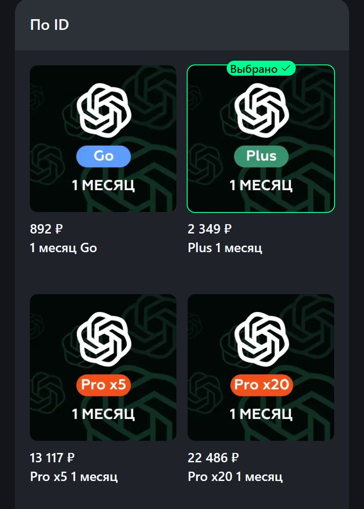
ШАГ 3. Указываем email
Введи свой Email. На него придёт чек и ссылка на заказ.
Поставь галочку «На моём аккаунте отсутствует активная подписка».
Переключатель про Kupikod ID оставь как есть: он отправляет чек на почту.
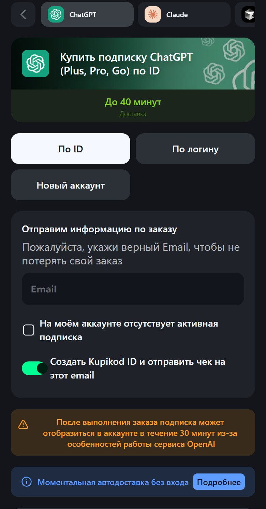
ШАГ 4. Оплачиваем заказ
Нажми «Купить».
Выбери способ оплаты: Купикоины, СБП или Картой.
Оплати.
После оплаты откроется страница заказа.
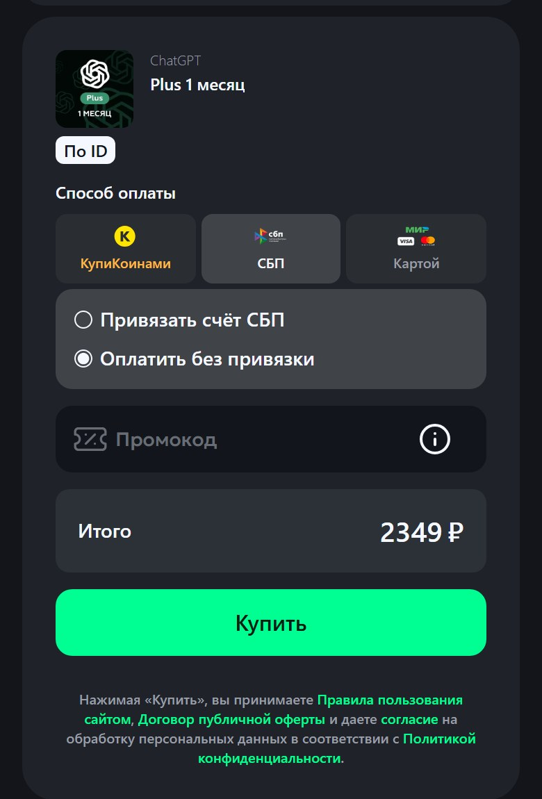
ШАГ 5. Вводим ChatGPT ID
На странице заказа нажми «Получить заказ».
Введи свой ID по инструкции на странице заказа.
Где взять ID: войди в ChatGPT в браузере, не в приложении.
Открой chatgpt.com/api/auth/session.
Найди раздел «account» и скопируй поле «id». Это UUID из 36 символов.
Не бери «user.id»: он начинается с «user-».
Отправляй только поле «id».
На странице сессии есть токен доступа. Целиком её не копируй и никому не показывай.
ШАГ 6. Ждём доставку
Вернись на страницу заказа.
Дождись статуса «Заказ доставлен».
Обычно это занимает до 40 минут.
Подписка может появиться в аккаунте ещё в течение 30 минут.
Заказ не пришёл?
Напиши в поддержку Kupikod и укажи номер заказа.
Если подписка не активировалась в срок, возврат возможен.